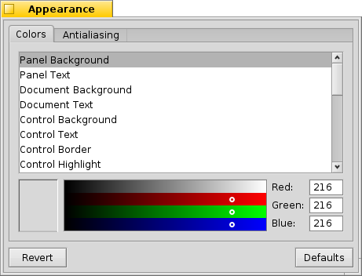
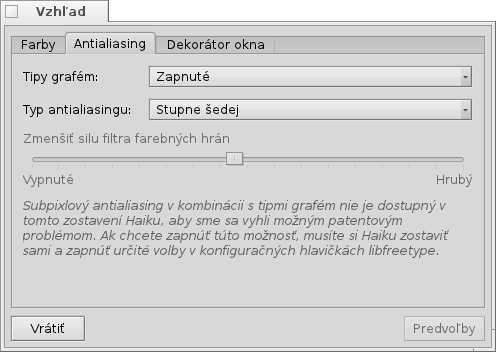
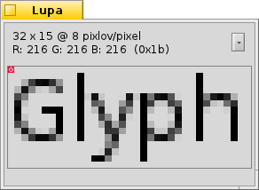
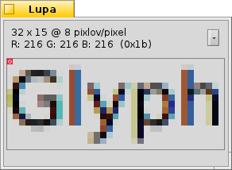

Vzhľad
Vzhľad
| Panel: | ||
| Umiestnenie: | /boot/system/preferences/Appearance | |
| Nastavenia: | ~/config/settings/system/app_server/appearance ~/config/settings/system/app_server/fonts |
Nastavenia vzhľadu vám umožňujú meniť vizuálnu stránku Haiku.
 Písma
Písma

Haiku definuje tri štandarné písma na rozličné účely. Môžete nastaviť bežný, hrubý typ písma a proporcionálne písmo, ktoré sa budú používať v rôznych častiach systému. Okrem nich sa zvlášť nastavuje písmo používané v menu.
Inštalovanie nových písiem
Nové písma, ktoré sa nedodávajú ako súčasť bežného balíka .hpkg je možné nainštalovať skopírovaním do podpriečinka zodpovedajúceho typu písma (psfonts alebo ttfonts) do ich zodpovedajúcich priečinkov non-packaged (pozri tému Rozloženie súborového systému). Pre písma TrueType by to boli priečinky:
| /boot/system/non-packaged/data/fonts/ttfonts/ | pre písma dostupné každému používateľovi. | |
| /boot/home/config/non-packaged/data/fonts/ttfonts/ | pre písma dostupné iba vám. |
Farby

V prvej záložke, , môžete meniť farby rôznych častí používateľského rozhrania. Z iných programov, napr. WonderBrush, Icon-O-Matic alebo panelu Pozadia, môžete myšou pretiahnuť farby.
Dekorácie okien

Dekorácie určujú vzhľad a správanie okien a všetkých prvkov grafického používateľského rozhrania. V súčasnej dobe sa Haiku dodáva iba s jednou predvolenou dekoráciou. Ak by ste našli nainštalovali ďalšie dekorácie, môžete si vybrať inú z roletového menu.
Predvolená dekorácia Haiku vám umožňuje nastaviť štýl šípky posuvníka: buď jednoduché šípky na konci posuvníkov, ktoré ušetria trochu priestoru alebo dvojité šípky - v tradičnom štýle BeOS - potenciálne ušetria trochu pohybu myši pri posúvaní smerom nahor a nadol, resp. doľava a doprava...
Antialiasing

Druhá záložka, , ponúka rôzne nastavenia vykresľovania obsahu na obrazovke.
Tipy grafém
Aktivovanie nastavenia zarovná všetky znaky takým spôsobom, že všetky ich vertikálne a horizontálne hrany sa budú nachádzať presne medzi dvoma pixlami. Výsledkom je perfektný kontrast, hlavne pri čiernom texte na bielom pozadí (alebo naopak). Text vyzerá ostrejšie. Taktiež existuje nastavenie , ktoré pomáha hlavne pri zariadeniach s nízkym rozlíšením obrazovky, akými sú napr. netbooky. Malé písma môžu pri týchto nastaveniach vyzerať dosť zle, ale stále vám poskytujú výhody Tipov grafém v textových editoroch a Termináli.
Pozrite si, ako ovplyvňuje nastavenie Tipy grafém text na týchto zväčšených obrázkoch:
 Tipy grafém: vypnuté |  Tipy grafém: zapnuté |
Je dôležité tiež poznamenať, že všetky okná Lupy na tejto stránke sú vykreslené pomocou príslušných nastavení. Môžete si spraviť reálny dojem porovnaním napr. tučného písma v žltej záložke alebo textu "35 x 15 @ 8 pixlov/pixel".
Typ antialiasingu
Vykresľovanie sa dá ďalej vylepšiť technikou zvanou Antialiasing, ktorá podporuje tak vektorovú grafiku, ako aj text. Vyhladzuje čiary zmenou farby určitých pixlov. To sa dá robiť dvoma metódami:
mení intenzitu pixlov na hrane.
funguje ešte lepšie, hlavne pri LCD monitoroch s vysokým rozlíšením. Namiesto zmeny intenzity pixla mení jeho farbu, čo presunie hranu o zlomok pixla, pretože LCD displeje produkujú každý pixel pomocou červených, zelených a modrých subpixelov.
Obe metódy ilustrované dvomi zväčšenými obrázkami:
Stupne šedej, Tipy grafém: vypnuté |  LCD subpixel, Tipy grafém: vypnuté |
Antialiasing založený na subpixeloch pridáva objektom jemný zafarbený lesk, ktorý nemusí každému vyhovovať. V Haiku môžete pomiešať obe metódy antialiasingu pomocou posuvníka a nájsť tak pre seba najvhodnejšie nastavenie.
Ak aktivujete Tipy grafém a vykresľovanie pomocou LCD subpixelov zmenou zdrojového kódu a prekompilovaním, takto to vyzerá v porovnaní s nastavením Tipy grafém so Stupňami šedej:
Stupne šedej, Tipy grafém: zapnuté | LCD subpixel, Tipy grafém: zapnuté |
V spodnej časti sa nachádzajú dve tlačidlá:
| vráti všetko na predvolené hodnoty | ||
| vráti nastavenia, ktoré boli aktívne v momente spustenia nastavení vzhľadu. |